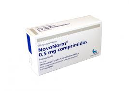
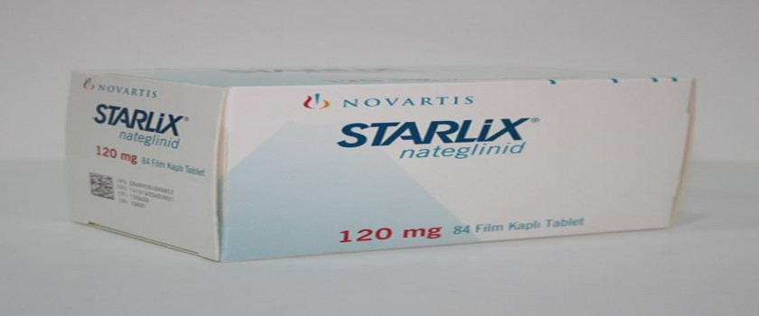

Repaglinida: NOVONORM está indicado para el tratamiento de pacientes con diabetes mellitus no insulino dependiente o tipo II (DMNID); que no pueden ser controlados con dieta y ejercicio solamente. NOVONORM® está indicado también en combinación con Metformina en estos pacientes cuando un sólo medicamento no es suficiente. El tratamiento con NOVONORM® debe complementarse con dieta y ejercicio.
se contraindica en pacientes con antecedentes de hipersensibilidad a los componentes de la fórmula. Asimismo, en estados de hipoglucemia, en pacientes con diabetes insulino dependiente, en cetoacidosis, precoma o coma diabético, en insuficiencia hepática, en embarazo, lactancia y en niños menores de 12 años.
Comprimidos
Repaglinida (novonorm) Se administra preprandial por vía oral. Se recomienda un monitoreo periódico de la glucosa en sangre y orina para determinar la dosis mínima requerida.
Dosis de inicio: La dosis inicial recomendada en adultos es de 0.5 mg, el ajuste de la dosis debe hacerse cuando haya transcurrido una a dos semanas.
Dosis de mantenimiento:La dosis máxima recomendada es una sola toma de 4 mg administrada con los alimentos principales. La dosis total diaria máxima no debe exceder de 16 mg.
Repaglinida (NOVONORM), nateglinida.
Potencia el efecto de las meglitinidas, aumentando el riesgo de hipoglucemia:
Interacciones que reducen su eficacia. Fármacos que pueden disminuir el efecto hipoglucemiante:
Reacciones de hipersensibilidad: En raras ocasiones, se han reportado casos de prurito y urticaria.
Hipoglucemia
Disturbios visuales: Muy raramente, se han reportado cambios visuales Síntomas gastrointestinales: Náuseas, vómitos, dolor abdominal, estreñimiento y diarrea
Aumento de enzimas hepáticas: En muy raras ocasiones, se ha informado de disfunción hepática severa, aunque no se ha establecido una relación causal directa con la repaglinida